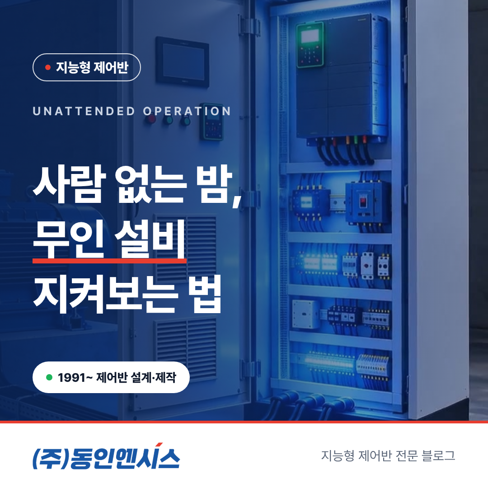
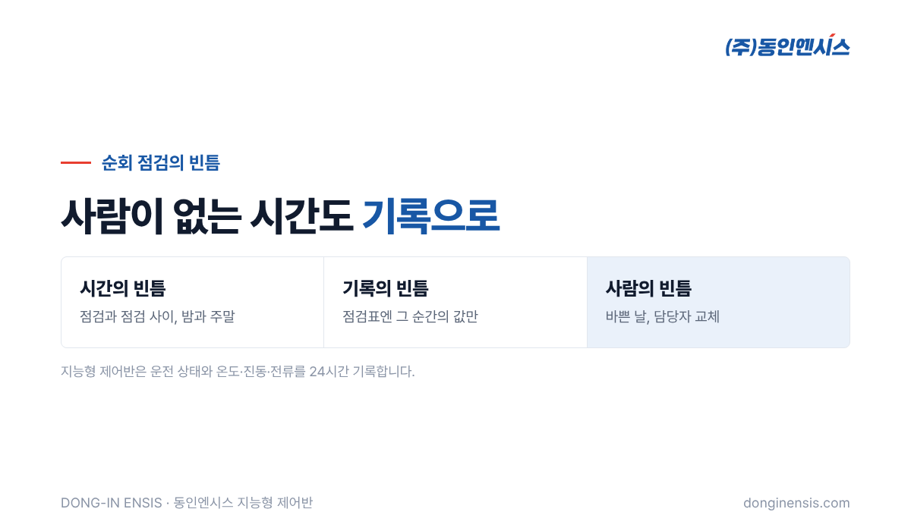
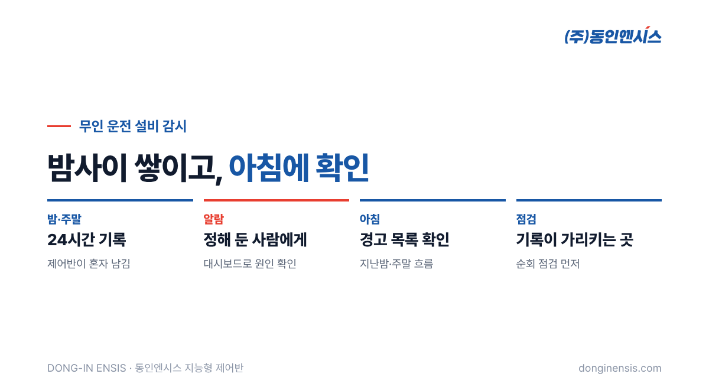

퇴근 시간이 지나도 공장은 쉬지 않습니다. 급수 펌프는 밤새 물을 올리고, 냉동기는 주말에도 돌고, 배기 팬은 사람이 없는 동안에도 공기를 바꿉니다. 문제는 사람이 없는 시간에 생긴 이상은 다음 날 아침에야 발견된다는 점입니다. 1991년부터 부산에서 제어반을 설계하고 만들어 온 동인엔시스가, 야간·주말에 혼자 도는 설비를 지켜보는 무인 설비 감시에 대해 자주 받는 질문 일곱 가지에 답했습니다.
순회 점검은 지금도 중요한 일입니다. 귀로 소리를 듣고, 손으로 열을 느끼고, 눈으로 누유를 확인하는 일은 센서가 대신하기 어렵습니다. 다만 순회 점검에는 구조적인 빈틈이 있습니다.
무인 운전 설비에서 이 빈틈은 그대로 위험이 됩니다. 금요일 저녁에 시작된 베어링 이상이 월요일 아침까지 이어지면, 작은 정비로 끝날 일이 큰 수리가 되기도 합니다. 그래서 무인 설비 감시는 순회 점검을 없애는 것이 아니라, 순회 점검이 닿지 않는 시간을 메우는 일이라고 보는 편이 정확합니다.
설비가 혼자 도는 동안 남겨야 할 것은 크게 세 가지입니다.
동인엔시스 지능형 제어반은 설비를 제어하면서 이런 값을 24시간 계속 기록합니다. 따로 수집 장비를 달지 않아도 제어반 하나가 이 일을 맡습니다. 월요일 아침에 주말 동안의 흐름을 그래프로 이어 볼 수 있다는 것만으로도 점검의 질이 달라집니다. 예를 들어 토요일 오후부터 베어링 온도가 조금씩 오르기 시작했다면, 담당자는 그 설비부터 들여다보면 됩니다. 기록이 없다면 같은 설비를 '이상 없음'으로 지나쳤을 수도 있습니다.

센서마다 기준값을 정해 두고, 그 값을 벗어나면 경고나 알람으로 표시합니다. 경고는 '변화가 시작됐으니 지켜보라', 알람은 '지금 확인이 필요하다'는 뜻입니다.
무인 설비에서 중요한 것은 이 알람을 누가 받을지 미리 정해 두는 일입니다. 야간 당직자가 있는지, 주말에는 누구에게 연락이 가는지, 연락을 받은 사람이 무엇을 해야 하는지를 도입 단계에서 함께 정합니다. 담당자는 웹 대시보드에서 어느 설비의 어떤 값 때문인지 바로 확인할 수 있습니다.
밤사이 경고가 쌓이는 것은 괜찮지만, 알람이 아무에게도 닿지 않는 것은 곤란합니다. 그래서 '경고는 다음 날 아침에 모아서 보고, 알람은 바로 누군가에게 간다'처럼 두 단계를 나눠 운영하는 방식을 권합니다. 밤마다 사소한 일로 담당자를 깨우지 않으면서, 정말 급한 일은 놓치지 않기 위해서입니다.
지능형 제어반의 데이터는 웹 대시보드로 확인합니다. 브라우저로 여는 방식이라 사무실 PC뿐 아니라 휴대폰에서도 볼 수 있습니다. 알람을 받은 담당자가 공장에 오기 전에 상태를 먼저 보고, 바로 와야 하는 일인지 다음 날 아침에 봐도 되는 일인지 판단할 수 있습니다.
여기서 분명히 해 둘 점이 있습니다. 대시보드는 설비를 보는 창이지, 멀리서 설비를 조작하는 리모컨이 아닙니다. 인터록과 최종 제어는 언제나 현장 PLC가 맡고, 서버는 데이터만 받습니다. 원격 접속이 필요할 때는 고객이 승인한 VPN으로만 연결합니다. 보는 일과 움직이는 일을 나눠 두어야 멀리서 보는 편리함이 현장의 안전을 해치지 않습니다.
Photorealistic photo of an empty industrial pump room at night in a Korean factory: two blue centrifugal pumps running under dim blue-ish night lighting, a light-grey control cabinet with small green status LEDs glowing, a wall clock showing late night (no readable numbers), concrete floor, no people, no brand logos, no readable text. 3:2 landscape.
공장 네트워크는 생각보다 자주 끊깁니다. 주말에 공유기가 재부팅되거나 정전 뒤에 통신 장비가 늦게 살아나는 일도 있습니다.
이때도 제어반은 설비를 계속 제어하고, 끊긴 동안의 데이터는 제어반 안에 보관합니다. 연결이 살아나면 보관해 둔 데이터를 순서대로 다시 보내기 때문에, 월요일에 보는 주말 기록에 빈 구간이 생기지 않습니다. 다만 끊긴 동안에는 실시간 알람을 밖에서 받을 수 없으니, 통신 상태도 함께 지켜보는 것이 좋습니다. 대시보드에서 어느 제어반의 값이 언제부터 들어오지 않는지를 확인하면, 설비 이상과 통신 문제를 구분할 수 있습니다.
아래 조건에 많이 해당하는 설비가 첫 대상으로 알맞습니다.
급수·가압 펌프, 냉동기와 냉각탑 팬, 배기 팬, 공기압축기가 흔한 후보입니다. 모두 모터로 움직이고, 사람이 자리를 비운 시간에도 멈추면 안 되는 설비들입니다. 설비는 그대로 두고 제어반만 바꾸거나 새로 달기 때문에, 한두 대부터 시작해 넓혀 가기도 수월합니다. 첫 설비에서 몇 주 동안 야간·주말 기록이 쌓이면, 그 설비가 사람이 없을 때 어떻게 움직이는지가 처음으로 눈에 보이게 됩니다. 의외로 많은 현장이 이때 '밤에는 이렇게 자주 켜졌다 꺼지는구나' 하는 사실을 처음 알게 됩니다.

무인 설비 감시는 사람을 없애는 일이 아니라, 사람이 봐야 할 것을 골라 주는 일입니다. 도입 뒤에도 사람이 할 일은 분명히 있습니다.
동인엔시스는 원격 상태 확인과 정기 점검, 알람 기준 조정, 운영 교육으로 이 과정을 함께합니다. 순회 점검은 '무작정 한 바퀴'에서 '기록이 가리키는 곳 먼저'로 바뀝니다. 같은 시간을 들여도 더 많은 것을 보게 되는 셈이고, 무인 설비 감시가 사람의 일을 줄이기보다 사람의 눈을 더 정확한 곳으로 보내는 이유가 여기에 있습니다.
Photorealistic photo of a Korean maintenance manager in a navy work jacket at a desk in a factory office early in the morning, looking at a monitor showing abstract trend lines over several days with one small yellow marker (no readable text), coffee cup and notebook on the desk, soft morning sunlight through blinds, documentary style, no brand logos, no readable text. 3:2 landscape.
공장이 비어 있는 시간에도 설비는 일하고, 이상은 그 시간을 가리지 않습니다. 무인 설비 감시의 출발점은 거창한 시스템이 아니라, 사람이 없는 시간의 기록을 남기는 것입니다. 우리 공장에서 밤새 혼자 도는 설비 한 대부터 떠올려 보세요.
문의 051-862-3668 · dongin@donginmne.com
아래 질문 중 하나에 실제 경험으로 답해 본문 적당한 곳에 넣어 주세요. 사람이 직접 쓴 문장이 들어가면 네이버에서 저품질 위험이 줄고 노출에 도움이 됩니다.